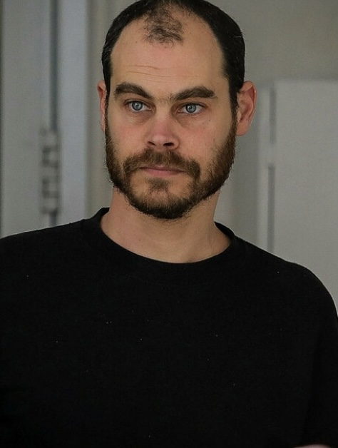
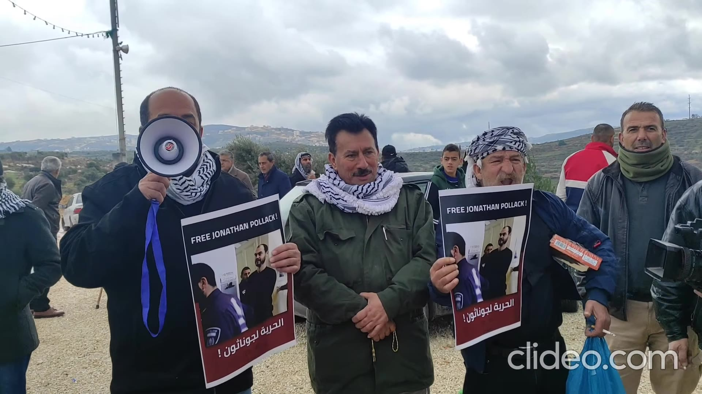
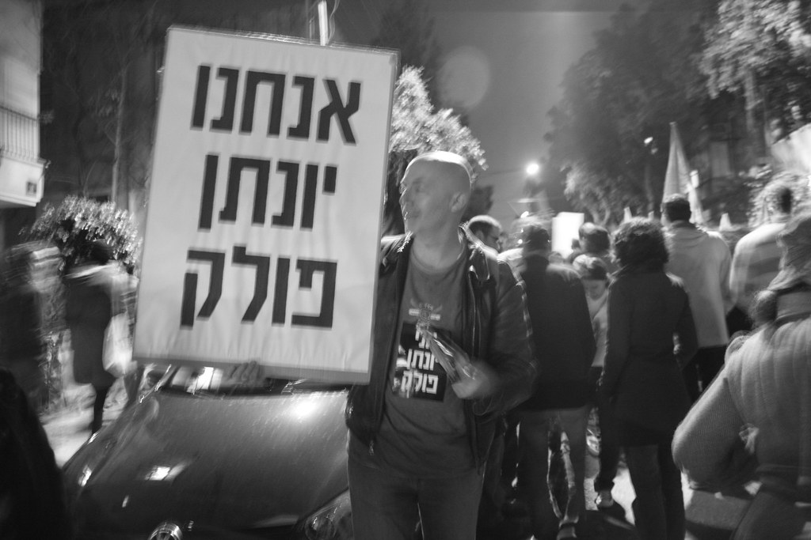

| Date | Case | Result | Source |
|---|---|---|---|
| 2004 | Protest against the barrier outside the Rabin military base, Tel Aviv: illegal assembly | Three-month suspended sentence | Hebrew Wikipedia; the 2010 report confirms an earlier suspended sentence. The 2004 date is unconfirmed. |
| Oct. 2010 | Barrier protest | Fine (about $1,250) | Wikipedia, citing Al Jazeera; unconfirmed. |
| Dec. 27, 2010 | "Critical Mass" bicycle ride in Tel Aviv against the Gaza blockade, January 31, 2008: illegal assembly | The three-month suspended sentence was activated, plus a 1,500-shekel fine. He refused community service: "I will go to prison with my head held high." Released early in 2011. | Makor Rishon/NRG; Times of Israel (2020) |
| Jan.–Feb. 2020 | Ad Kan's private complaint | About six weeks in custody; no conviction; case stayed by the Attorney General | +972 |
| Apr. 2021 | Interfering with a police officer at a protest on Route 60 near Rachel's Tomb, summer 2017. The indictment says rioters were throwing stones and firebombs at the tomb compound, and that he stood in the road to block a jeep moving toward them. | One month in prison (already served in custody) and two months suspended. The judge noted his refusal to cooperate and his reply "I didn't interfere with them enough." Snitz was acquitted in a parallel case. | HaKol HaYehudi; +972; Hebrew Wikipedia (Snitz) |
| Jan. 27–31, 2023 | Beita: indicted for aggravated assault of a police officer, rioting and interfering with police. The indictment says he took part in a riot where tires were burned and stones thrown, threw stones that hit the front of an armored Border Police vehicle, and then ran. | About three weeks in jail, then house arrest with an electronic tag; later a night curfew and a ban on entering the West Bank. He refused to enter a plea. In court he said he heard officers coordinating their stories. Outcome not found. | Israel Hayom; +972; support-jonathan.com |
| Jul. 2024 | Incitement to violence: two counts, for the 2020 Haaretz column and his 2021 Leibowitz Prize speech | Outcome not found. | Ynet; News1; Arutz 7 |
His lawyer, Riham Nasra, called the 2023 case "political persecution" and said he "has no convictions for violent incidents" (+972). That is accurate as far as the record above goes. The prosecution argued that his "dangerousness is heightened" in a time of security tension (Israel Hayom).
At Abu Falah, AP reports that Pollak said settlers came down from a hilltop outpost "throwing stones, burning trees and firing gunshots," that soldiers stood with them, and that soldiers later shot a council member, Abdel Jaber Hassan. The IDF said the man was running at troops with a sharp object. The Desk's Abu Falah backgrounder lists him among the committed activists present. The Binyamin Regional Council and the Yesha Council's Situation Room said "anarchists" came with Palestinians to provoke a clash under cover of the harvest. Pollak's presence is established. That he organized or led anything that day is not shown by any source we found.